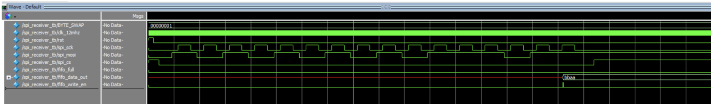
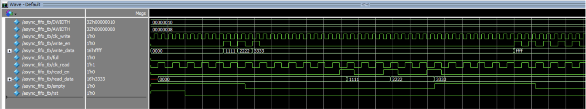
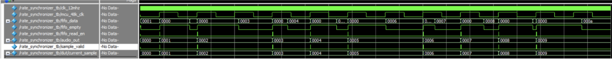
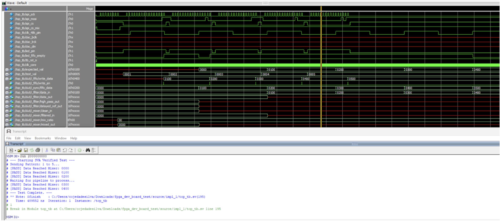
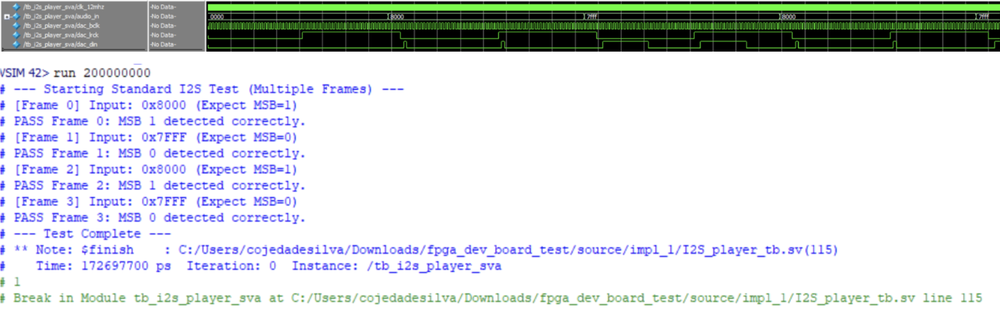
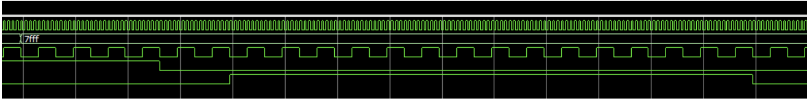
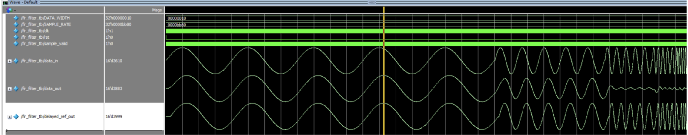

RECEIVING DATA
First, we start by describing the path data takes. The FPGA will read SPI data from the MCU, where it is sent much faster than it is supposed to be played. This is intentional: the MCU also has to read the data and perform other actions like reading the DAC for the joystick values. This means we store all the data quickly in a FIFO, and then the synchronizer reads it at the rate the MCU wants us to read at. The MCU produces a clock that rises every time we are supposed to play an audio sample, which in a 48 kSamples/s design means 48 kHz.
FILTERS
This data then gets relayed to the FIR filter, which has an inbuilt RAM module to store 128 samples. A moving average low-pass filter is then applied. Since an ideal FIR filter needs to “read the future,” we delay the “present” sample by 64 samples:
\[ \frac{64}{48{,}000} = 1.3\text{ ms} \]
This makes the low‑pass output and the delayed unfiltered signal phase‑aligned. After this, we go back to our second SPI block, which has a different chip‑enable to read the MCU potentiometer axis, specifically the vertical one that controls frequencies.
MIXER
This data then gets relayed to a Mixer module, which takes the filtered data, the delayed signal, and the control signal to mix different audio components.
The mixer works by computing a high‑pass component:
\[ \text{HighPass} = \text{Unfiltered} - \text{LowPass} \]
Then reconstructing the sound:
\[ \text{HighPass} + \text{LowPass} = \text{Unfiltered} \]
By assigning different weights to the high‑pass and low‑pass signals, we can produce frequency control. Low frequencies are further amplified since they are less audible; this makes the filter sound more balanced.
PLAYING
The mixer output is relayed to the I2S module, which needs to sample the sound at a higher sampling rate to avoid data loss. A bit clock set to (2 f_{}) is used (1–3 MHz range). The left/right clock runs at the sample frequency, and the data line sends each mono sample twice—once during the HIGH portion of LRCLK and once during the LOW portion.
TESTBENCHES
Audio SPI Receiver (audio 2 bytes at a time)
We expect to get 1010-1010-1011-1011 = aabb, but it is swapped due to endianness (BYTE_SWAP = 1).

FIFO
We can see how 1111, 2222, and 3333 are sent (2‑byte samples matching audio sample length) and retrieved using a differently timed clock (read enable is slower than write enable).

Synchronizer
The synchronizer reads the FIFO at the MCU‑specified rate (usually 48 kHz, up to ~90 kHz). It converts occasionally noisy FIFO output (like 0000) into a continuous, correctly‑timed stream.

Top Module
Anything after the filter will not show data, since it needs 128 samples to function. Everything else operates correctly: SPI reads values into test_val (after byte swap). Data is saved faster than the 48 kHz clock but output at 48 kHz, as intended.

I2S Player
Given the following:

Zooming in, we see that data changes during the falling edge of the clock, which is incorrect—data must change on falling and be read on rising by the PCM5102. Another common mistake was starting transmission on the first bit instead of the second.
Checking sample values (8000, 7FFF, etc.), we confirm they match their binary representation.

FIR Filter
